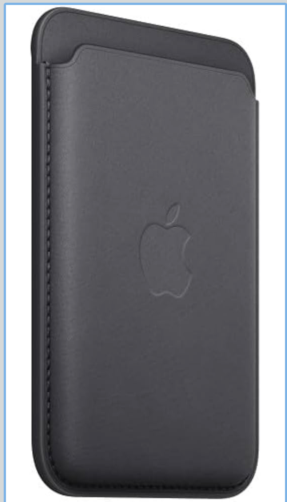

Apple MagSafe対応iPhoneケースを1年使って分かった弱点

見た目は上質だが、耐久性に課題あり
Apple純正のMagSafe対応ケースはデザイン性が高く、手触りも良いのが特徴です。 しかし長期間使うと、側面のゴム部分の欠けや、縫製のほつれが目立つという声が多く見られます。
側面のゴムが欠けやすい
特に角の部分は摩耗しやすく、使用期間が短くても欠けが発生するケースがあります。 見た目の劣化が早い点はデメリットと言えるでしょう。
縫製のほつれで高級感が損なわれる
内側のポケット部分など、縫製が甘い箇所があり、糸が飛び出してしまうことがあります。 高価格帯の純正ケースとしては気になるポイントです。
まとめ：デザイン重視ならアリ、耐久性重視なら再検討
見た目や手触りは非常に優秀ですが、長期間きれいに使いたい人には向かない可能性があります。 他社製の耐久性重視モデルと比較して選ぶのがおすすめです。